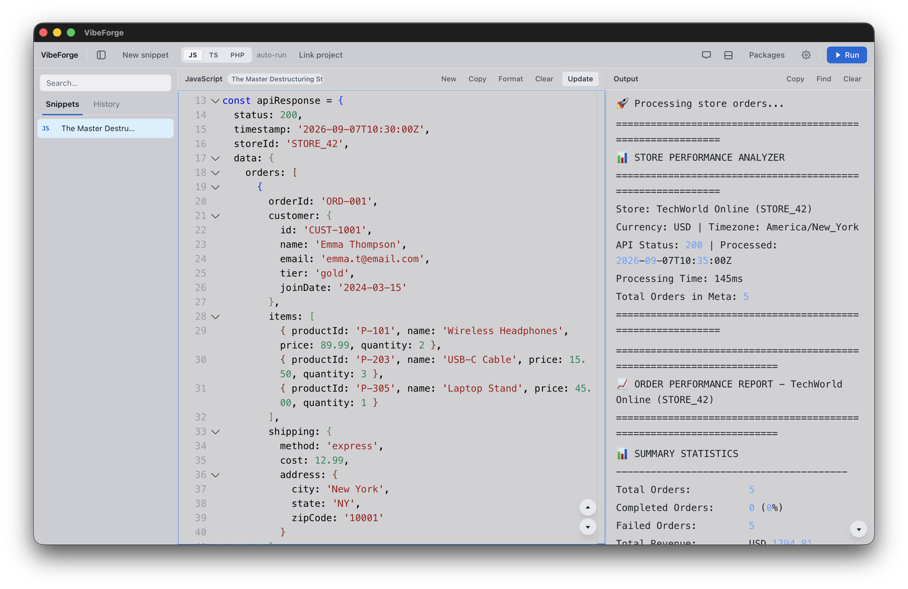
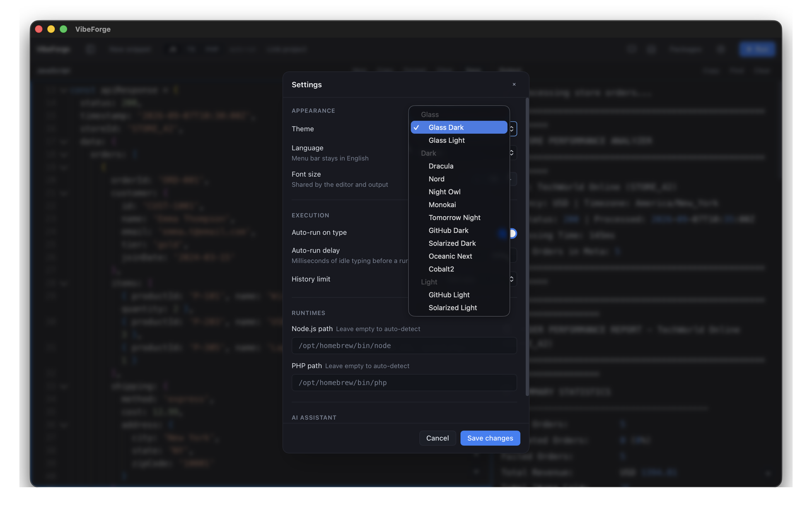
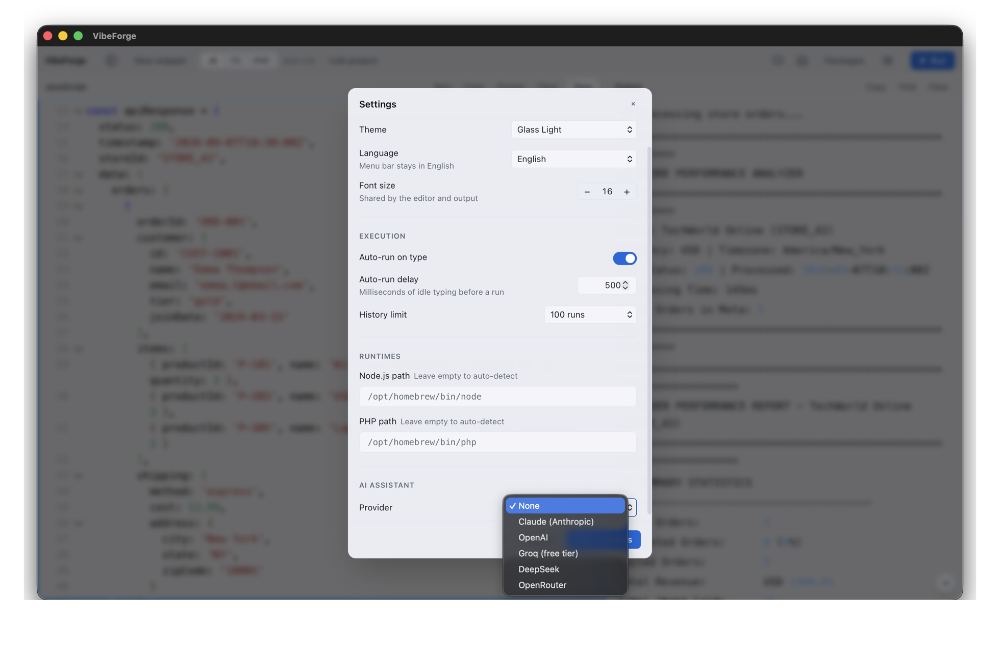
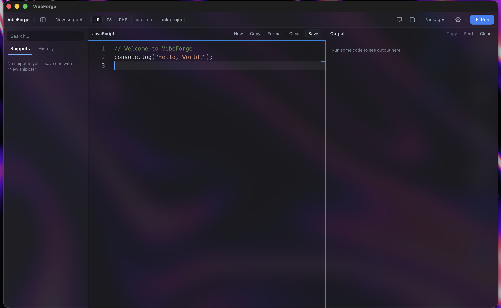

Редактор Monaco
Тот же движок, что в VS Code: подсветка, свёртка, автодополнение.
Бесплатная open-source альтернатива платным блокнотам вроде RunJS: JavaScript, TypeScript и PHP со встроенным AI-ассистентом. Всё выполняется у вас на машине — без браузера и без облака.
Apple Silicon · ~7 МБ · бесплатно

Одно окно вместо связки «редактор + терминал + вкладка с чатом».
Тот же движок, что в VS Code: подсветка, свёртка, автодополнение.
Вывод стримится построчно через ваши Node.js и PHP. Опционально — автозапуск при вводе.
Claude, OpenAI, Groq, DeepSeek, OpenRouter. Содержимое редактора и зависимости проекта уходят в контекст сами.
Укажите папку — ассистент прочитает package.json или composer.json. Для Laravel добавляется автодополнение фасадов и классов.
Включая две на нативном материале окна macOS. Применяются мгновенно.
Локальная база SQLite. История запусков помнит, к какому проекту относилась.
Тема и язык интерфейса переключаются сразу — без сохранения и перезапуска.


Темы Glass используют нативную вибрантность macOS: окно прозрачное, и система размывает за ним рабочий стол. Это системный материал, а не CSS-имитация.

Свежая версия — на странице релизов.
xattr -cr /Applications/VibeForge.app